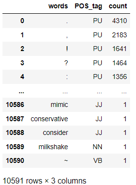

Analysis & Recommendations
Please find below the process used to analyze the dataset. All graphs have been created using Matplotlib and Seaborn
Data Cleaning and Exploratory Data Analysis
Data Cleaning
This state consists of cleaning and preprocessing data in order to prepare it for modeling
- Start by reading the file using read_csv in pandas. Drop any unnecessary columns to focus on important data needed for analysis. Currently columns Id, sentiment score, sentiment confidence and the tweet content were retained.
- Look for nulls within the dataset. Any nulls withing the sentiment confidence/score can be replaced using mean of the remaining data in the score/confidence columns.
- Look for nulls within the dataset. Any nulls withing the sentiment confidence/score can be replaced using mean of the remaining data in the score/confidence columns.
- Some of the emoticons create weird symbols within the dataset and in order to remove them we would encode the twitter data to ascii and then decode this ascii data
- Use regex to remove unnecessary content that do not provide any value while extracting sentiment. This includes URL's, emails, new line characters, distracting single quotes and usernames.
- Analyze hashtags to see if they are useful. Since we have a lot of hashtags we find the count of words in hashtags to sort through the large amounts of data. We find that few words like wow, innovation, scary, crazy can be used for sentiments but the number is small (5%) so we'd rather eliminate all hashtags for easier processing since over 95% of the hashtags do not provide any valuable insight
Basic analysis
Use a barplot to depict sentiment scores to understand the distribution better. From the graph below,
we see maximum concentration of data in the sentiment 3 section. This might result in us being able to predict data with sentiment 3 more accurately
Outlier detection can be performed using a boxplot. On creating a boxplot using the sentiment confidence column, we note that while there are no apparent outliers, the scores
are skewed towards the higher end which means that the confidence in the sentiment score column is pretty high which is a positive thing. Thus the
sentiment score would be a good variable to predict future sentiments
Packages Used:- Pandas, NumPy, Matplotlib
Tokenization & Lemmatization
Tokenization is the process of breaking down text into smaller chunks of data for easier processing. We also need to perform lemmatization in order to reduce every word to its base root word. Perform tokenization using the tokenize function of nltk and create a custom Parts of Speech tagger in order to tag values as adjective, verb, noun and adverb and use these tagged values for lemmatization.
In order to perform lemmatization, we use the lemmatizer function in nltk to lemmatize the tokenized dataset. Remove stop words and frequently occurring words that do not add any value to sentiment. Create a list with all lemmatized words. Make 2 arrays one for lemmatized words and other for parts of speech tagging. Create dataframe of lemma and parts of speech. Since we do not have a POS tagging for punctuation we add one called PU  To find overall commonly occuring words we apply a filter of greater than 1000 occurences. We then find the most commonly occuring nouns, adjectives and punctuations in the dataset
Packages Used:- nltk and other packages mentioned above
Background
There are three types of ration cards in India namely white, yellow and orange:-
- Yellow Ration Cards: Yellow colour ration cards are issued only to families who fall under the Below Poverty Line (BPL) category.
- Orange Ration Cards: Families with a yearly income of more than Rs. 15,000 and less than 1 lakh can apply for the saffron/orange smart ration card.
- White Ration Cards: Families with an annual income of Rs. 1 Lakh or above can apply for white smart ration cards.
Analysis done
As shown below The first step was trying to understand the overall dstribution of household by ther their ration colour.
Findings: Here we found that most of the household have yellow or orange ration cards
The next step was trying to understand if all of the households within these 2 categories receive ration since they fall in the low income category
Findings: While most do receive their ration which is positive we would like to understand which states/districts donot receive their ration

We see from the charts below that Maharashtra is the state with the highest number of households and within this Pune is the city where the problem is prevalant

Thus the first focus of the NGO can be coordinating with the villages in Pune to ensure rationing to all their residents
Analysis done
We used a boxplot to determine the state spending maximum amount on healthcare
Findings: Maharashtra has a large number of outliers that spend more than 2,500 rupees per month on healthcare

We further drilled down and filtered for households spending greater than or equall to 2,500 rupees in Maharashtra
Findings: Here we noticed that while Pune had a few outliers that spend a lot on healthcare, on an overall level Aurangabad has a higher average spent
Thus the NGO can focus on these villages in Aurangabad who spend a large amount on healthcare and in turn should offer some subsidies for the same
Analysis
We first try to identify the types of houses
Findings: The most durable kind of house involves a complete cement slab. However the least percentage of houses seem to fall in this category
The next step was trying to understand if most of the houses with no washrooms fall under the mud and metal sheet houses which is the weakest kind of house
Findings: As expected those with houses made out of mud or metal sheets have almost a 50-50 distribution between those with their own toilets and those who do not. Comparing this ratio also lets us know that in case of houses completely made of cement which is the strongest also tend to have their own washrooms.
Thus we can focus on those who do not have washrooms in the metal sheet and mud and metal category
We see from the charts below that maharashtra is the state with the highest number of households without a toilet and within this Pune is the city where the problem is prevalant

Thus the first focus of the NGO can be coordinating with the villages in Pune to ensure construction of proper washrooms thus ensuring better hygiene
Dashboard Creation
Once done with basic exploratory data analysis, the next step was creating a dashboard on Tableau to summarize different factors such as housing, rent, income etc
The drop down above the map of india enables us to filter on both state and district to find all metrics in a particular location. Click here to view the dashboard